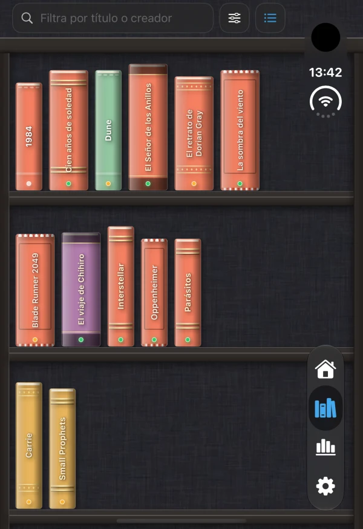
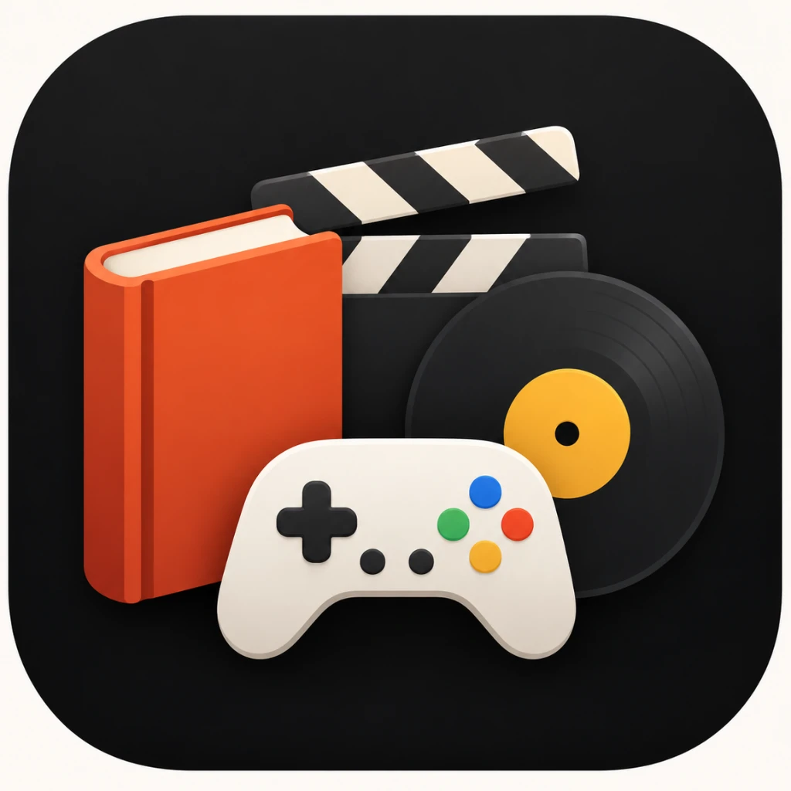

Libros, cine, juegos y música.
Leisure Shelf reúne todo lo que lees, ves, juegas y escuchas en un único lugar. Explora tus obras en una estantería física 2.5D con lomos realistas o en listas filtrables por estado, formato y préstamos, con privacidad total y sin necesidad de crear ninguna cuenta.

Toda tu colección cultural en una sola biblioteca
Deja de repartir tu historial entre cinco aplicaciones diferentes. Leisure Shelf centraliza tus aficiones culturales respetando los detalles de cada soporte.
Libros y cómics
Busca al instante en Open Library o escanea el código de barras ISBN. Guarda autor, editorial, páginas leídas y formato (tapa dura, rústica o digital).
Open Library & Escaneo ISBNPelículas y series
Consulta sinopsis, directores, reparto y años de estreno a través de TMDB y Movie of the Night. Registra temporadas completadas y ediciones físicas en Blu-ray o DVD.
TMDB & Movie of the NightVideojuegos
Conecta con las bases de datos de RAWG y Steam. Organiza tu colección por plataformas, consolas físicas, cartuchos retro, expansiones y horas jugadas.
RAWG & Steam DatabaseMúsica y vinilos
Explora discografías mediante MusicBrainz y el Cover Art Archive. Cataloga tus vinilos LP, cintas de casete, CDs y álbumes favoritos con carátulas en alta resolución.
MusicBrainz & Cover Art ArchiveSeguimiento de préstamos
No vuelvas a perder un libro o juego prestado. Apunta a quién se lo dejaste, cuándo y programa una notificación local para recordar su devolución.
Recordatorios locales integradosImporta tus datos sin coste
Trae tus lecturas acumuladas en Goodreads o tus listas de películas de Letterboxd mediante archivos CSV. La importación es completa, ilimitada y gratuita.
Goodreads, Letterboxd & CSVOrganiza tu biblioteca en tres pasos
Diseñado para disfrutar de la colección tanto al registrar una nueva obra como al contemplar la estantería completa.
Busca o añade manualmente
Introduce el título, creador o código ISBN para obtener portadas y datos oficiales al instante, o crea fichas personalizadas para ediciones raras y objetos físicos.
Elige tu forma de contemplarla
Alterna entre la estantería física 2.5D de madera con lomos texturizados y la vista de lista rápida con filtros por estado: pendiente, en curso, terminado o abandonado.
Registra notas y préstamos
Añade tus puntuaciones sobre 10, opiniones privadas, fechas de lectura o visionado, y controla qué amigos tienen tus libros o películas físicas prestadas.
La app por dentro
Capturas reales de Leisure Shelf en funcionamiento sobre iPhone y iPad.
Dos formas de usar Leisure Shelf
La versión gratuita te permite catalogar tu ocio día a día sin pagar nada. Leisure Shelf Pro amplía la experiencia para quienes tienen colecciones extensas y quieren sincronización en la nube.
Versión Gratuita
0 € para siempre
- 1 adición a la biblioteca al día
- 1 búsqueda online al día en catálogos abiertos
- Importaciones ilimitadas de Goodreads y Letterboxd
- Estantería física 2.5D y catálogo en lista completo
- Control de préstamos con notificaciones locales
- Personalización de texturas, colores, fuentes e iconos
- Almacenamiento 100% privado en tu propio dispositivo
- Sin sincronización en iCloud ni estadísticas avanzadas
Leisure Shelf Pro
- Adiciones ilimitadas a tu biblioteca
- Búsquedas online ilimitadas en Open Library, TMDB, RAWG y MusicBrainz
- Sincronización privada por iCloud (CloudKit) entre iPhone y iPad
- Estadísticas avanzadas: desglose por formato, valoraciones y evolución anual
- Objetivos de ocio anuales con seguimiento de progreso en vivo
- Exportación en CSV para copias de seguridad de toda la biblioteca
- Compartir en familia (Apple Family Sharing) compatible
Preguntas frecuentes
¿Es necesario registrarse o crear una cuenta?
No. Leisure Shelf está diseñado bajo el principio de privacidad absoluta. No existe formulario de alta, ni nombres de usuario, ni contraseñas, ni recopilación de correos. Tu catálogo pertenece exclusivamente a tu dispositivo.
¿Cómo funciona la estantería física 2.5D?
Cada libro, película, videojuego o vinilo añadido a tu colección genera automáticamente un lomo tridimensional realista con colores acordes a la portada, textura de papel o madera, y tipografía en vertical. Al deslizar, experimentas la sensación táctil de explorar tu biblioteca física.
¿Puedo importar mis listas de Goodreads o Letterboxd sin pagar?
Sí. La importación de archivos CSV desde Goodreads y Letterboxd es completamente gratuita e ilimitada. Puedes volcar todo tu historial de golpe en la versión gratuita de la app.
¿Qué límites tiene exactamente la versión gratuita?
La versión gratuita permite realizar 1 búsqueda en catálogos online al día y añadir 1 obra diaria a la colección de forma continua. La estantería 2.5D, la lista, las importaciones, la personalización y los préstamos son 100% funcionales. Si deseas añadir lotes masivos manualmente o usar búsquedas sin límite diario, puedes optar por Leisure Shelf Pro.
¿Dónde se guardan mis datos y cómo se sincronizan?
En la versión gratuita, todos tus datos residen localmente en el almacenamiento seguro de tu iPhone o iPad. Con Leisure Shelf Pro, se sincronizan automáticamente a través del contenedor privado de CloudKit asociado a tu cuenta de Apple ID, sin intermediarios ni servidores de terceros.
¿Cómo funciona el seguimiento de préstamos físicos?
Desde la ficha de cualquier obra física (un libro en papel, un disco de vinilo, un cartucho de consola o un Blu-ray), puedes indicar el nombre de la persona a quien se lo has prestado y una fecha esperada de retorno. La app programará una notificación local para que no olvides recuperarlo.

Empieza hoy tu estantería personal
Libros, películas, series, videojuegos y música conviviendo con orden y belleza en tu iPhone y iPad.